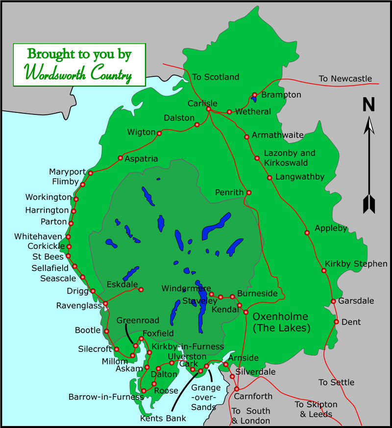

Please close this window to return to wordsworthcountry.com
© Copyright WordsworthCountry 2005
This Cumbria map shows you the main rail networks of Lake District.
This map is brought to you by:
WordsworthCountry.com
